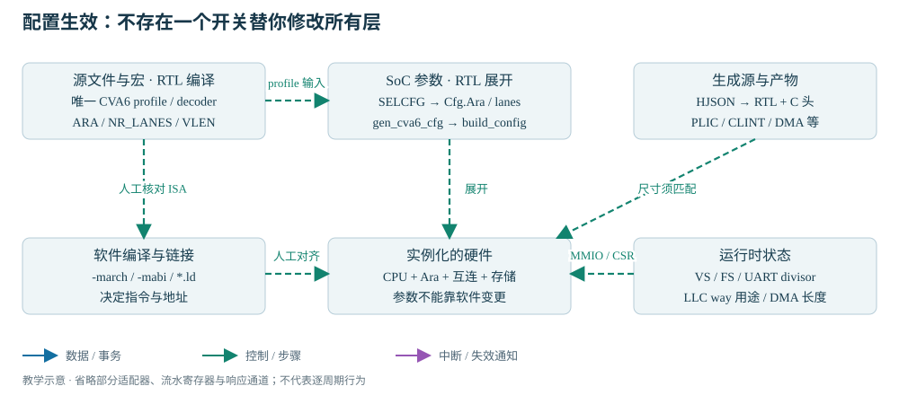

READ · TRACE · BUILD · EXPLAIN
03 · 硬件与软件配置体系
源码选择、硬件展开、软件编译与运行时状态之间的依赖关系。
解释为什么 SELCFG=3 仍会缺向量能力；列出改配置必须同步核对的文件。前置：第 01～02 章，知道编译与运行不是同一阶段。
本章说明配置层次及其匹配关系；具体参数字典见配置参考手册，参数如何改变实例、端口和互连结构见硬件主线 H01～H03。
Cheshire/CVA6/Ara 配置体系
向量指令执行至少涉及以下四项配置约束。CPU profile（配置参数包）决定 CPU 是否译码 V 指令；Ara 是否实例化由 SoC 参数决定；生成哪条指令由软件编译器决定；执行时是否允许访问向量状态还由 VS 决定。任一层次不匹配都可能导致向量程序无法执行。

| 层次 | 本地例子 | 改变后要做什么 |
|---|---|---|
| 源文件选择 | CVA6 profile 文件；真实 first-pass decoder 或 stub | 重新导出清单并编译全新工作库，确认定义唯一 |
| 预处理宏 | ARA、NR_LANES、VLEN | 重新编译受影响的 RTL；FPGA wrapper 与 TB 的消费者不同 |
| SoC 参数 | SelectedCfg → TbCheshireConfigs；Cfg.Ara | 重新展开硬件；不是软件运行时寄存器 |
| 生成配置 | PLIC 源数、CLINT 核数、寄存器偏移 | 检查生成 RTL/C 头与 HJSON 同版。当前不能假设随任意参数自动重生 |
| 软件构建 | -march、-mabi、-T spm.ld | 重编译、重链接，包括库对象。旧 make 不完整追踪头文件/flags 变化 |
| 运行时 | VS/FS、LLC way、UART divisor、DMA 地址/长度 | 执行 CSR/MMIO 初始化与同步；不能运行时把 lane 数变大 |
硬件配置基线与参数覆盖
CPU profile 与平台配置基线
| 入口 | CPU / Ara 状态 | 证据 |
|---|---|---|
| 根 cheshire.mk 默认 | cv64a6_imafdchsclic_sv39_wb；RVV=0，标量 WB D-cache | 源码静态确认 |
| 旧 Questa / VCS compile 脚本 | 相同标量 profile；同时含 stub 和真实 decoder | 本轮文本复核；工具重复定义的具体表现未运行 |
| TB SELCFG=3 | Ara=1、2 lanes、AraVLEN=2048；不会改 CPU profile | tb_cheshire_pkg.gen_cheshire_ara_cfg |
| 现有 FPGA add_sources | 向量 profile、ARA、2 lanes、2048；无 decoder stub | 清单事实；不是当前 bitstream 与全部源码一致性的证明 |
| 教材独立导出 / 提取建议 | cv64a6_imafdcv_sv39 + SELCFG=3 + 唯一真实 decoder | 本轮已导出并静态检查；未 RTL 编译展开或运行 |
| VCU118 HelloWorld | 用户曾报告串口成功 | 用户历史报告；不能推导向量和外部 DDR 已验收 |
CPU 缓存配置与 SoC 参数覆盖
两个 CPU profile 除 V 扩展之外还存在缓存差异：标量 profile 的 I/D cache 是 16/32 KiB，D-cache 为 WB（write back，写回）；向量 profile 是 4/8 KiB、WT（write through，写穿）。WT 也有读缓存和写缓冲，不能当成无缓存。CVA6 profile 的 VLEN=64 是虚拟地址容器宽度；AraVLEN=2048 是每个向量寄存器的位数。
gen_cva6_cfg 先取 cva6_config_pkg::cva6_cfg，再覆盖平台地址/缓存区间、总线字段、CLIC/PMP 等，build_config 再产生内部配置。Cfg.Ara 不会将 RVV 自动改为 1。最终配置还受 SoC 覆盖影响：例如 PMP 条目从 profile 的 8 被 SoC 默认覆盖为 0。
Ara 实例与向量规模配置
CPU profile 决定向量指令支持，SoC 配置决定 Ara 实例及其规模。上表的 TB 配置使用 Ara=1、2 lanes、AraVLEN=2048；SELCFG=3 不会切换 CPU profile。参数全集见Ara 配置参数手册；参数到硬件结构的推导见SoC 配置与互连结构生成。
软件编译与运行时配置
ISA、ABI 与链接配置
软件侧通过 -march、-mabi 与链接脚本选择指令集、调用约定和存储布局。修改这些选项后，需要重新构建应用及相关库对象；具体构建步骤见C 语言程序的编译与链接流程，容量与地址约束见ELF 结构与程序存储布局。
CSR 与外设初始化状态
运行时初始化包括 VS/FS、LLC way 分配与 UART 等设备寄存器。它们改变执行状态，不能增加 CPU 指令支持或改变 Ara lane 数。向量非法指令是跨层不匹配的一个案例，应同时核对硬件指令支持、软件选项和首条向量指令前的状态初始化。
配置依赖与修改流程
| 学习中的改动 | 必须一起看 |
|---|---|
| 标量 → RVV | CPU RVV/EnableAccelerator、Ara 实例、真实 decoder、ISA/ABI、VS、FS、访存一致性与返回值 |
| SPM → DRAM 链接 | PT_LOAD 地址、入口、栈顶、外部存储模型/容量、初始化完成；仅改 ELF 名字无效 |
| 减少 LLC 容量 | SPM 同时缩小，Boot ROM 栈与应用区、链接 LENGTH 和 DMA 实验保留区都要检查 |
| 接更多 AXI 发起者 | ID 扩展、响应路由、仲裁、AXI RT 生成尺寸与软件编号；不是只新增一个端口 |
| 加一个中断 | 源同步、电平/边沿、PLIC/CLIC 源数、源号、屏蔽/优先级和软件 handler |
配置一致性验证实验
工作目录：仓库根；输入：旧生成清单和 TB 包；工具：rg；产物：终端中的源码行号，约几秒。
rg -n 'cv64a6_.*config_pkg|first_pass_decoder' \
target/sim/vsim/compile.cheshire_soc.tcl \
target/sim/vcs/compile.cheshire_soc.sh
rg -n 'ret.Ara|ret.AraNrLanes|ret.AraVLEN' target/sim/src/tb_cheshire_pkg.sv成功判据：能分别说出“清单编译哪个 profile”“展开配置选择什么 Ara”。然后执行 独立清单导出，比较新旧选择。不要为了练习覆盖旧脚本或执行 make all。
1. SELCFG 是运行时硬件寄存器吗？
不是。启动脚本把它传成 TB 的 SelectedCfg 参数，影响展开出来的 SoC；plusarg BINARY 则在仿真 initial 中读取。
2. 改 -march 后 make 说 nothing to do，能信旧 ELF 吗？
不能仅凭时间戳信任。原规则未完整追踪参数变化；教材构建每次新建输出目录，日志明确记录命令和输入。
3. 减 LLC ways 只影响缓存性能吗？
不。阵列还用作启动 SPM，可能损坏栈、程序或实验缓冲区的容量前提。